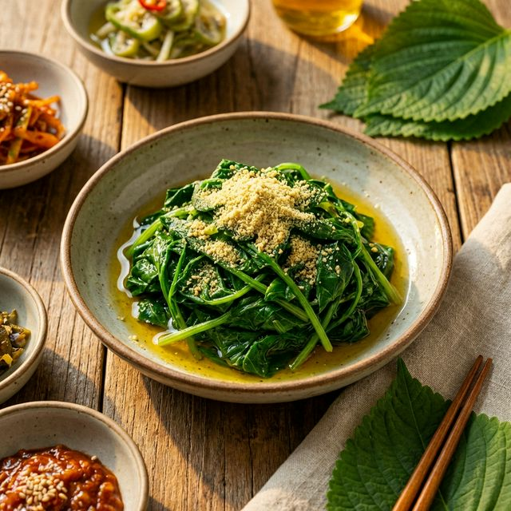

어르신들, 대표님들 안녕하시지요? 🙇♂️ 최근 화장실에서 살짝 미끄러졌을 뿐인데 고관절이 부러져 한 달 넘게 병원 신세를 지시는 분들, 주변에서 참 많이 보셨을 겁니다.
특히 완경(폐경)을 맞이한 50~60대 여성분들은 뼈를 보호하던 에스트로겐이 뚝 끊기면서, 바람 든 무처럼 뼈에 구멍이 숭숭 뚫리는 '골다공증'의 치명적인 위협에 노출됩니다. 😨
사실 우유 속 칼슘은 한국인의 장(腸)에서 제대로 흡수되지 못하고 밖으로 배출되는 경우가 허다합니다. 게다가 유제품 소화가 안 되어 속앓이만 하시는 어르신들도 많으시지요.
그렇다면 소화도 잘 되고 뼈도 꽉꽉 채워주는 진짜배기 천연 칼슘제는 없을까요? 정답은 의외로 우리 발밑, 따뜻한 봄기운을 머금고 돋아나는 '봄나물'에 있었습니다! 🌱
바로 특유의 향긋한 냄새로 봄철 입맛을 확 돋우는 '취나물'입니다! 🎉 흔해 빠진 반찬이라고 무시하셨다간 정말 평생 후회하십니다.

여기에 봄철 춘곤증을 싹 날려주는 비타민 A, B군까지 풍부해 피로 회복은 덤입니다! 찌뿌둥하고 무거웠던 몸이 취나물 한 주먹에 깃털처럼 가벼워지는 것을 느끼실 수 있을 겁니다. 🕊️
아무리 좋은 취나물도 '어떻게 먹느냐'에 따라 보약이 되기도 하고 맹탕이 되기도 합니다. 취나물 속 칼슘 흡수율을 최고조로 끌어올리는 비법은 바로 '들깨'입니다!
살짝 데친 취나물을 조물조물 무칠 때, 고소한 들기름 듬뿍, 들깨 가루 팍팍 뿌려 무쳐보세요. 들깨의 풍부한 지방과 단백질이 취나물의 영양소를 꽉 잡아주어 우리 몸속 깊은 곳 뼈 마디마디까지 칼슘을 팍팍 배달해 줍니다! 🚚💥